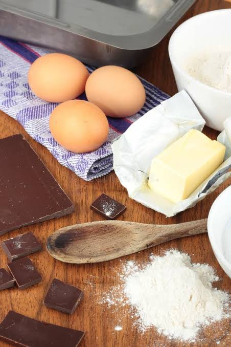
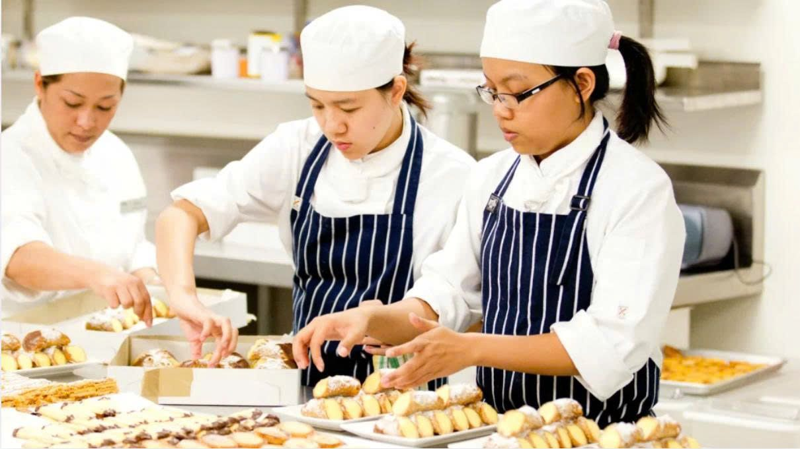
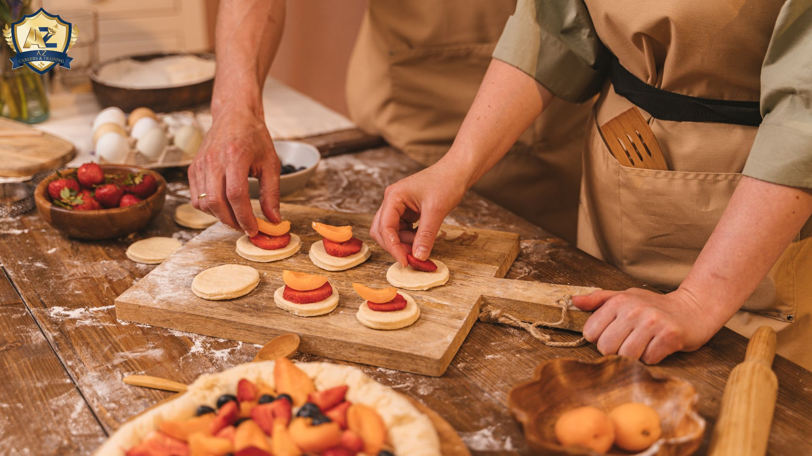

Bắt đầu từ món bánh
Lấy công thức làm điểm xuất phát thay vì phải tìm từng nguyên liệu một cách rời rạc.
BakeMate kết nối công thức, nguyên liệu và dụng cụ làm bánh trong cùng một quy trình mua sắm, giúp bạn chủ động chuẩn bị cho món bánh muốn thực hiện.

Trước khi bắt tay làm một chiếc bánh, người làm bánh cần tìm công thức, xác định nguyên liệu, chọn quy cách đóng gói và chuẩn bị dụng cụ phù hợp. Nếu phải tìm kiếm từng sản phẩm riêng lẻ, quá trình này có thể mất nhiều thời gian và dễ bỏ sót những thứ cần thiết.
BakeMate được xây dựng theo hướng bắt đầu từ món bánh khách hàng muốn làm. Thay vì chỉ tìm và mua từng sản phẩm độc lập, khách có thể tiếp cận công thức cùng các thông tin liên quan đến việc chuẩn bị nguyên liệu và dụng cụ.
Với định hướng đó, BakeMate mong muốn giúp việc chuẩn bị cho mỗi lần làm bánh trở nên rõ ràng, thuận tiện và dễ dự tính hơn.

Điểm nổi bật của BakeMate là kết nối nhu cầu làm một món bánh với quá trình lựa chọn sản phẩm. Công thức đóng vai trò trung tâm để khách hàng xác định những gì cần chuẩn bị.
Lấy công thức làm điểm xuất phát thay vì phải tìm từng nguyên liệu một cách rời rạc.
Đối chiếu lượng nguyên liệu trong công thức với quy cách đóng gói của sản phẩm để lựa chọn phù hợp hơn.
Hỗ trợ rà soát các thành phần cần thiết cho quá trình thực hiện món bánh.
Tổng hợp sản phẩm và chi phí dự kiến để khách hàng có cơ sở cân nhắc trước khi mua.
BakeMate hướng đến những người muốn chuẩn bị nguyên liệu và dụng cụ làm bánh thuận tiện hơn, từ lần đầu trải nghiệm đến những dịp tự tay làm bánh quen thuộc.

Có thêm cơ sở để xác định nguyên liệu, dụng cụ và các bước chuẩn bị trước khi thực hiện công thức.

Thuận tiện hơn khi tìm sản phẩm, cân nhắc quy cách đóng gói và dự kiến ngân sách cho món bánh yêu thích.
Hỗ trợ chuẩn bị cho những chiếc bánh dành tặng gia đình, bạn bè hoặc các dịp đặc biệt.
BakeMate định hướng một quy trình liền mạch, giúp khách hàng theo dõi những gì cần thiết trước khi bắt đầu làm bánh.
Bắt đầu với món bánh bạn muốn thực hiện.
Tham khảo định lượng và đối chiếu quy cách đóng gói.
Rà soát nguyên liệu, dụng cụ và chi phí dự kiến.
Kiểm tra giỏ hàng trước khi tiến hành mua sắm.
Khám phá các nguyên liệu và dụng cụ để chuẩn bị cho công thức mà bạn yêu thích.
Khám phá sản phẩm